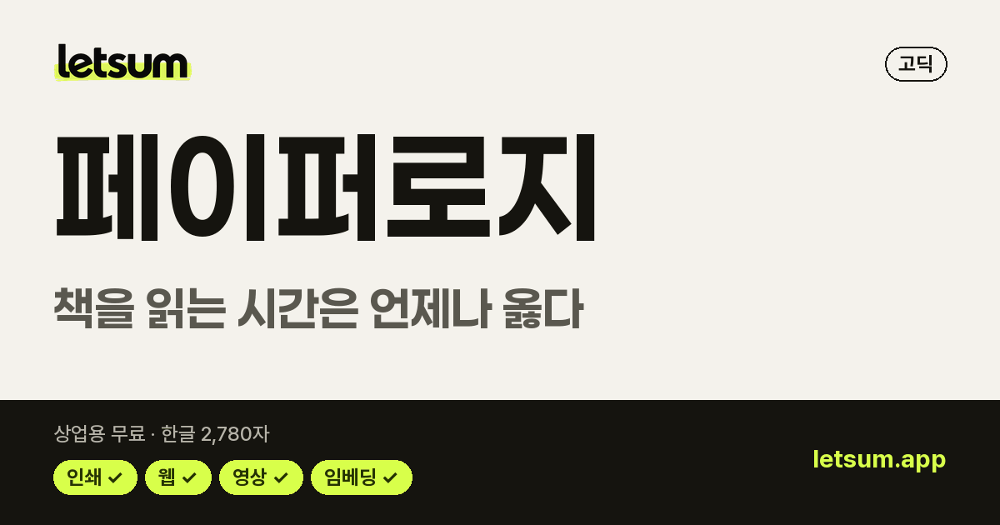
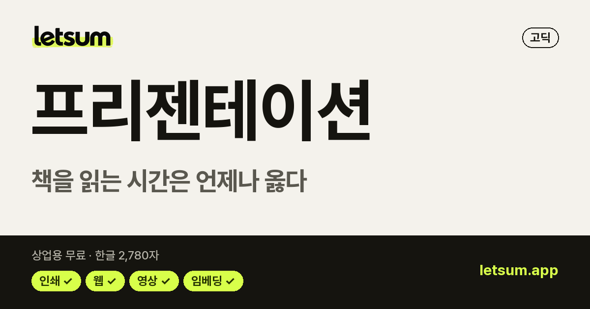
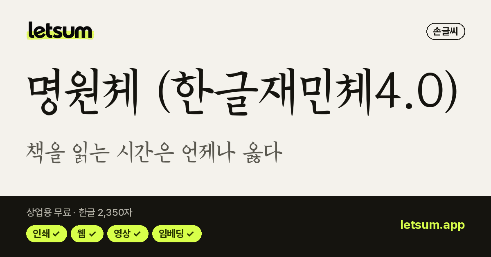
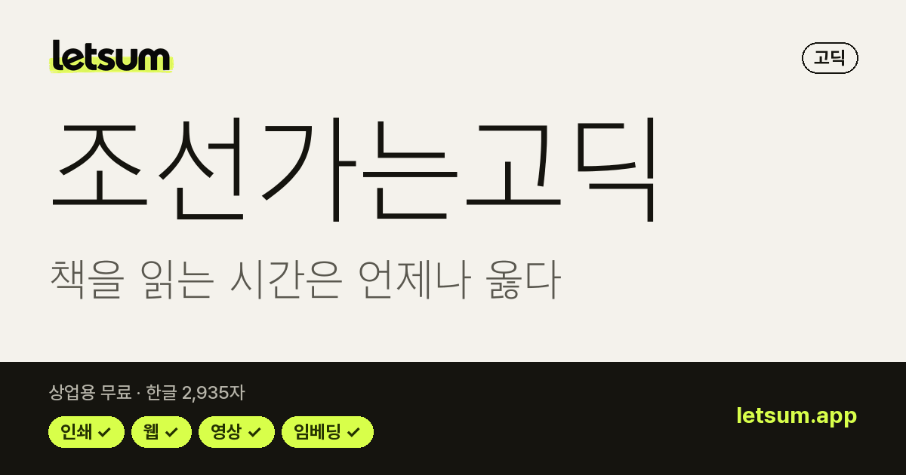
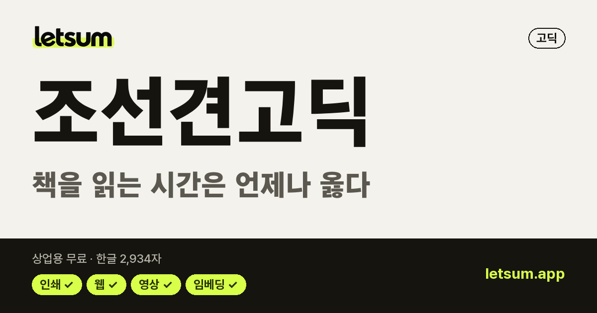
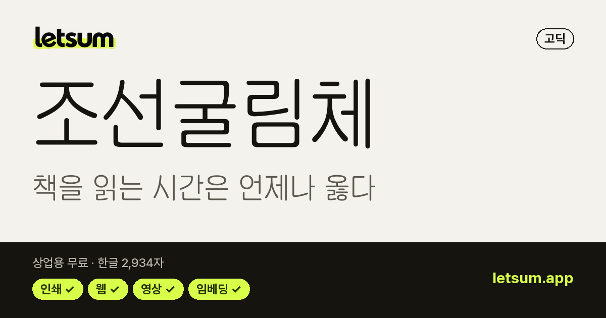
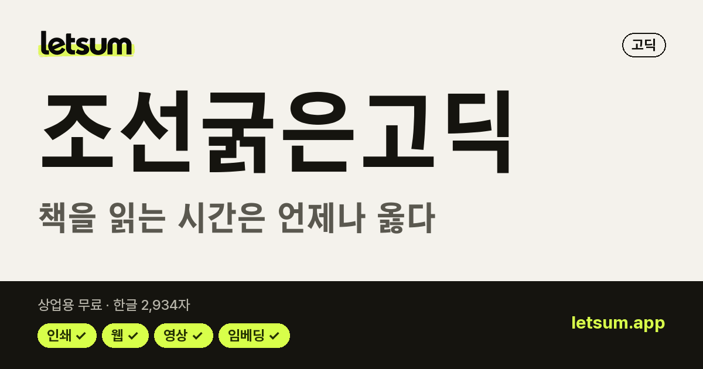
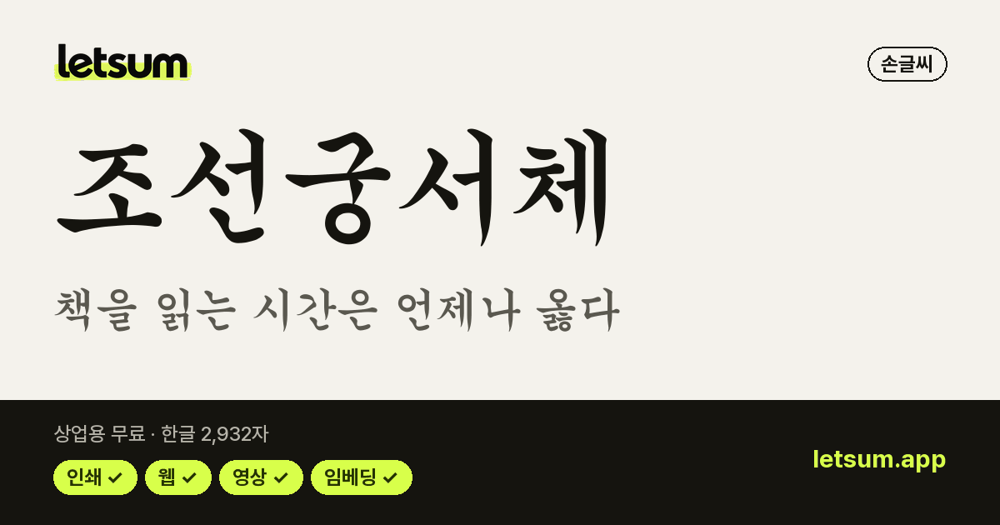
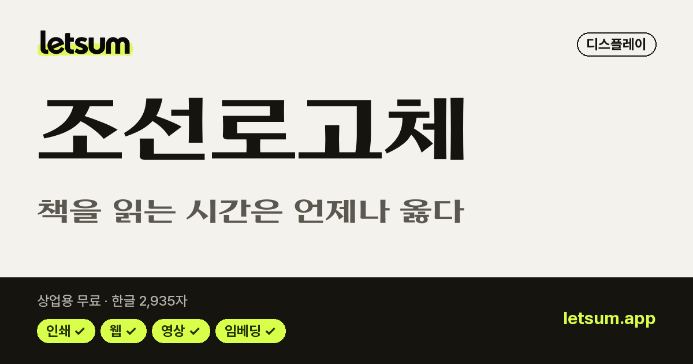
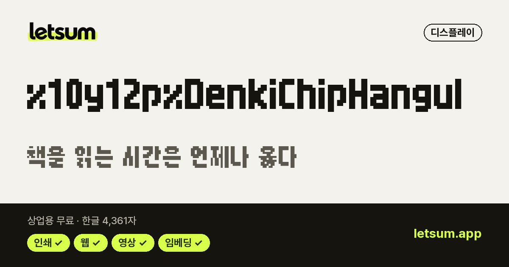

한자 지원 무료 폰트 55종
메인 화면에서 이 목록 보기 →내 문장으로 미리보기·비교·필터를 함께 쓸 수 있습니다
한글과 함께 한자(KS X 1001 한자 등)를 그려 넣은 상업용 무료 폰트입니다. 한자가 없는 폰트로 한자를 쓰면 그 글자만 다른 폰트로 바뀌어 보이므로, 한자가 섞인 글은 한 폰트 안에서 해결하는 편이 깔끔합니다.
라이선스 원문 대조 · 다운로드는 원 배포처로 연결 · 목록 갱신 2026-11-12 · 견본 이미지를 누르면 상세 정보와 내 문장 미리보기로 갑니다.

페이퍼로지고딕 · 굵기 9종 · 한글 2,780자한자 지원OFL · 인쇄·웹·영상·BI/CI 가능
프리젠테이션고딕 · 굵기 9종 · 한글 2,780자한자 지원OFL · 인쇄·웹·영상·BI/CI 가능 갈무리11디스플레이 · 굵기 2종 · 한글 11,172자한자 지원OFL · 인쇄·웹·영상·BI/CI 가능
갈무리11디스플레이 · 굵기 2종 · 한글 11,172자한자 지원OFL · 인쇄·웹·영상·BI/CI 가능 D2Coding고딕 · 굵기 2종 · 한글 11,172자한자 지원OFL · 인쇄·웹·영상·BI/CI 가능
D2Coding고딕 · 굵기 2종 · 한글 11,172자한자 지원OFL · 인쇄·웹·영상·BI/CI 가능 Kopub World 돋움체고딕 · 굵기 3종 · 한글 11,172자한자 지원공공누리 1유형 · 인쇄·웹·영상·BI/CI 가능
Kopub World 돋움체고딕 · 굵기 3종 · 한글 11,172자한자 지원공공누리 1유형 · 인쇄·웹·영상·BI/CI 가능 Kopub World 바탕체명조 · 굵기 3종 · 한글 11,172자한자 지원공공누리 1유형 · 인쇄·웹·영상·BI/CI 가능
Kopub World 바탕체명조 · 굵기 3종 · 한글 11,172자한자 지원공공누리 1유형 · 인쇄·웹·영상·BI/CI 가능 서울남산체고딕 · 굵기 1종 · 한글 11,172자한자 지원서울시 무료 이용 · 인쇄·웹·영상 가능
서울남산체고딕 · 굵기 1종 · 한글 11,172자한자 지원서울시 무료 이용 · 인쇄·웹·영상 가능 서울한강체고딕 · 굵기 1종 · 한글 11,172자한자 지원서울시 무료 이용 · 인쇄·웹·영상 가능
서울한강체고딕 · 굵기 1종 · 한글 11,172자한자 지원서울시 무료 이용 · 인쇄·웹·영상 가능 갈무리14디스플레이 · 굵기 1종 · 한글 11,172자한자 지원OFL · 인쇄·웹·영상·BI/CI 가능
갈무리14디스플레이 · 굵기 1종 · 한글 11,172자한자 지원OFL · 인쇄·웹·영상·BI/CI 가능 갈무리9디스플레이 · 굵기 1종 · 한글 11,172자한자 지원OFL · 인쇄·웹·영상·BI/CI 가능
갈무리9디스플레이 · 굵기 1종 · 한글 11,172자한자 지원OFL · 인쇄·웹·영상·BI/CI 가능 서울남산장체고딕 · 굵기 1종 · 한글 11,172자한자 지원서울시 무료 이용 · 인쇄·웹·영상 가능
서울남산장체고딕 · 굵기 1종 · 한글 11,172자한자 지원서울시 무료 이용 · 인쇄·웹·영상 가능 서울한강장체고딕 · 굵기 1종 · 한글 11,172자한자 지원서울시 무료 이용 · 인쇄·웹·영상 가능
서울한강장체고딕 · 굵기 1종 · 한글 11,172자한자 지원서울시 무료 이용 · 인쇄·웹·영상 가능 갈무리7디스플레이 · 굵기 1종 · 한글 11,172자한자 지원OFL · 인쇄·웹·영상·BI/CI 가능
갈무리7디스플레이 · 굵기 1종 · 한글 11,172자한자 지원OFL · 인쇄·웹·영상·BI/CI 가능 나눔고딕 에코고딕 · 굵기 3종 · 한글 11,172자한자 지원OFL · 인쇄·웹·영상·BI/CI 가능
나눔고딕 에코고딕 · 굵기 3종 · 한글 11,172자한자 지원OFL · 인쇄·웹·영상·BI/CI 가능 나눔바른고딕고딕 · 굵기 3종 · 한글 11,172자한자 지원OFL · 인쇄·웹·영상·BI/CI 가능
나눔바른고딕고딕 · 굵기 3종 · 한글 11,172자한자 지원OFL · 인쇄·웹·영상·BI/CI 가능 한글재민3.0명조 · 굵기 1종 · 한글 2,350자한자 지원 · 감성 캘리그라피OFL · 인쇄·웹·영상·BI/CI 가능
한글재민3.0명조 · 굵기 1종 · 한글 2,350자한자 지원 · 감성 캘리그라피OFL · 인쇄·웹·영상·BI/CI 가능 한글재민2.0명조 · 굵기 1종 · 한글 2,350자한자 지원OFL · 인쇄·웹·영상·BI/CI 가능
한글재민2.0명조 · 굵기 1종 · 한글 2,350자한자 지원OFL · 인쇄·웹·영상·BI/CI 가능 갈무리 Mono11디스플레이 · 굵기 1종 · 한글 11,172자한자 지원OFL · 인쇄·웹·영상·BI/CI 가능
갈무리 Mono11디스플레이 · 굵기 1종 · 한글 11,172자한자 지원OFL · 인쇄·웹·영상·BI/CI 가능 경기천년바탕명조 · 굵기 2종 · 한글 11,172자한자 지원공공누리 1유형 · 인쇄·웹·영상·BI/CI 가능
경기천년바탕명조 · 굵기 2종 · 한글 11,172자한자 지원공공누리 1유형 · 인쇄·웹·영상·BI/CI 가능 고신고딕고딕 · 굵기 4종 · 한글 11,172자한자 지원OFL · 인쇄·웹·영상·BI/CI 가능
고신고딕고딕 · 굵기 4종 · 한글 11,172자한자 지원OFL · 인쇄·웹·영상·BI/CI 가능
명원체 (한글재민체4.0)손글씨 · 굵기 1종 · 한글 2,350자한자 지원 · 전통 서예·궁서OFL · 인쇄·웹·영상·BI/CI 가능 서초바탕명조 · 굵기 1종 · 한글 11,172자한자 지원OFL · 인쇄·웹·영상·BI/CI 가능
서초바탕명조 · 굵기 1종 · 한글 11,172자한자 지원OFL · 인쇄·웹·영상·BI/CI 가능 예스 고딕고딕 · 굵기 4종 · 한글 11,172자한자 지원예스24 무료 이용 · 인쇄·웹·영상 가능
예스 고딕고딕 · 굵기 4종 · 한글 11,172자한자 지원예스24 무료 이용 · 인쇄·웹·영상 가능 예스 명조명조 · 굵기 2종 · 한글 11,172자한자 지원예스24 무료 이용 · 인쇄·웹·영상 가능
예스 명조명조 · 굵기 2종 · 한글 11,172자한자 지원예스24 무료 이용 · 인쇄·웹·영상 가능
조선가는고딕고딕 · 굵기 1종 · 한글 2,935자한자 지원조선일보 무료 이용 · 인쇄·웹·영상·BI/CI 가능
조선견고딕고딕 · 굵기 1종 · 한글 2,934자한자 지원조선일보 무료 이용 · 인쇄·웹·영상·BI/CI 가능
조선굴림체고딕 · 굵기 1종 · 한글 2,934자한자 지원조선일보 무료 이용 · 인쇄·웹·영상·BI/CI 가능
조선굵은고딕고딕 · 굵기 1종 · 한글 2,934자한자 지원조선일보 무료 이용 · 인쇄·웹·영상·BI/CI 가능 조선굵은명조명조 · 굵기 1종 · 한글 2,934자한자 지원조선일보 무료 이용 · 인쇄·웹·영상·BI/CI 가능
조선굵은명조명조 · 굵기 1종 · 한글 2,934자한자 지원조선일보 무료 이용 · 인쇄·웹·영상·BI/CI 가능
조선궁서체손글씨 · 굵기 1종 · 한글 2,932자한자 지원 · 전통 서예·궁서조선일보 무료 이용 · 인쇄·웹·영상·BI/CI 가능
조선로고체디스플레이 · 굵기 1종 · 한글 2,935자한자 지원조선일보 무료 이용 · 인쇄·웹·영상·BI/CI 가능 조선신명조명조 · 굵기 1종 · 한글 2,933자한자 지원조선일보 무료 이용 · 인쇄·웹·영상·BI/CI 가능조선일보명조조선일보명조명조 · 굵기 1종 · 한글 11,172자한자 지원조선일보 무료 이용 · 인쇄·웹·영상·BI/CI 가능
조선신명조명조 · 굵기 1종 · 한글 2,933자한자 지원조선일보 무료 이용 · 인쇄·웹·영상·BI/CI 가능조선일보명조조선일보명조명조 · 굵기 1종 · 한글 11,172자한자 지원조선일보 무료 이용 · 인쇄·웹·영상·BI/CI 가능 하다 모노고딕 · 굵기 2종 · 한글 11,172자한자 지원OFL · 인쇄·웹·영상·BI/CI 가능
하다 모노고딕 · 굵기 2종 · 한글 11,172자한자 지원OFL · 인쇄·웹·영상·BI/CI 가능 BB Mono I고딕 · 굵기 2종 · 한글 11,172자한자 지원OFL · 인쇄·웹·영상·BI/CI 가능
BB Mono I고딕 · 굵기 2종 · 한글 11,172자한자 지원OFL · 인쇄·웹·영상·BI/CI 가능 BB Mono S고딕 · 굵기 2종 · 한글 11,172자한자 지원OFL · 인쇄·웹·영상·BI/CI 가능
BB Mono S고딕 · 굵기 2종 · 한글 11,172자한자 지원OFL · 인쇄·웹·영상·BI/CI 가능 BrutalMix고딕 · 굵기 6종 · 한글 11,172자한자 지원OFL · 인쇄·웹·영상·BI/CI 가능
BrutalMix고딕 · 굵기 6종 · 한글 11,172자한자 지원OFL · 인쇄·웹·영상·BI/CI 가능 Integrated Code 火 한국어판고딕 · 굵기 6종 · 한글 11,172자한자 지원OFL · 인쇄·웹·영상·BI/CI 가능
Integrated Code 火 한국어판고딕 · 굵기 6종 · 한글 11,172자한자 지원OFL · 인쇄·웹·영상·BI/CI 가능 JetKai Mono고딕 · 굵기 4종 · 한글 11,172자한자 지원OFL · 인쇄·웹·영상·BI/CI 가능
JetKai Mono고딕 · 굵기 4종 · 한글 11,172자한자 지원OFL · 인쇄·웹·영상·BI/CI 가능 LXGW 문해 KR손글씨 · 굵기 3종 · 한글 11,172자한자 지원OFL · 인쇄·웹·영상·BI/CI 가능
LXGW 문해 KR손글씨 · 굵기 3종 · 한글 11,172자한자 지원OFL · 인쇄·웹·영상·BI/CI 가능 LXGW 문해 Mono KR손글씨 · 굵기 3종 · 한글 11,172자한자 지원OFL · 인쇄·웹·영상·BI/CI 가능
LXGW 문해 Mono KR손글씨 · 굵기 3종 · 한글 11,172자한자 지원OFL · 인쇄·웹·영상·BI/CI 가능 Min Sans고딕 · 굵기 9종 · 한글 11,172자한자 지원OFL · 인쇄·웹·영상·BI/CI 가능
Min Sans고딕 · 굵기 9종 · 한글 11,172자한자 지원OFL · 인쇄·웹·영상·BI/CI 가능 MuxJK고딕 · 굵기 2종 · 한글 11,172자한자 지원OFL · 인쇄·웹·영상·BI/CI 가능
MuxJK고딕 · 굵기 2종 · 한글 11,172자한자 지원OFL · 인쇄·웹·영상·BI/CI 가능 Roof Sans고딕 · 굵기 1종 · 한글 11,172자한자 지원OFL · 인쇄·웹·영상·BI/CI 가능
Roof Sans고딕 · 굵기 1종 · 한글 11,172자한자 지원OFL · 인쇄·웹·영상·BI/CI 가능 Tenten KR디스플레이 · 굵기 1종 · 한글 11,172자한자 지원OFL · 인쇄·웹·영상·BI/CI 가능
Tenten KR디스플레이 · 굵기 1종 · 한글 11,172자한자 지원OFL · 인쇄·웹·영상·BI/CI 가능 갈무리 Mono7디스플레이 · 굵기 1종 · 한글 11,172자한자 지원OFL · 인쇄·웹·영상·BI/CI 가능
갈무리 Mono7디스플레이 · 굵기 1종 · 한글 11,172자한자 지원OFL · 인쇄·웹·영상·BI/CI 가능 갈무리 Mono9디스플레이 · 굵기 1종 · 한글 11,172자한자 지원OFL · 인쇄·웹·영상·BI/CI 가능
갈무리 Mono9디스플레이 · 굵기 1종 · 한글 11,172자한자 지원OFL · 인쇄·웹·영상·BI/CI 가능 나눔명조 옛한글명조 · 굵기 1종 · 한글 11,172자한자 지원OFL · 인쇄·웹·영상·BI/CI 가능
나눔명조 옛한글명조 · 굵기 1종 · 한글 11,172자한자 지원OFL · 인쇄·웹·영상·BI/CI 가능 나눔바른고딕 옛한글고딕 · 굵기 1종 · 한글 11,172자한자 지원OFL · 인쇄·웹·영상·BI/CI 가능
나눔바른고딕 옛한글고딕 · 굵기 1종 · 한글 11,172자한자 지원OFL · 인쇄·웹·영상·BI/CI 가능 한글재민체6.0고딕 · 굵기 1종 · 한글 11,172자한자 지원OFL · 인쇄·웹·영상·BI/CI 가능
한글재민체6.0고딕 · 굵기 1종 · 한글 11,172자한자 지원OFL · 인쇄·웹·영상·BI/CI 가능 Harena Term고딕 · 굵기 2종 · 한글 11,172자한자 지원OFL + 아이콘별 조건 · 인쇄·웹·영상·BI/CI 가능
Harena Term고딕 · 굵기 2종 · 한글 11,172자한자 지원OFL + 아이콘별 조건 · 인쇄·웹·영상·BI/CI 가능 HBIOS-SYS디스플레이 · 굵기 1종 · 한글 11,172자한자 지원OFL + CC BY-SA 4.0 · 인쇄·웹·영상·BI/CI 가능
HBIOS-SYS디스플레이 · 굵기 1종 · 한글 11,172자한자 지원OFL + CC BY-SA 4.0 · 인쇄·웹·영상·BI/CI 가능 Monoplex CJK고딕 · 굵기 7종 · 한글 11,172자한자 지원OFL · 인쇄·웹·영상·BI/CI 가능
Monoplex CJK고딕 · 굵기 7종 · 한글 11,172자한자 지원OFL · 인쇄·웹·영상·BI/CI 가능
전기칩 한글디스플레이 · 굵기 1종 · 한글 4,361자한자 지원OFL · 인쇄·웹·영상·BI/CI 가능자주 묻는 질문
한자를 쓰면 일부 글자만 다른 폰트로 보이는 이유는?
쓰고 있는 폰트에 그 한자가 없어서 컴퓨터가 다른 폰트로 대신 그리기 때문입니다. 한자 지원 폰트를 쓰면 한글과 한자가 같은 디자인으로 보입니다. LETSUM의 한자 지원 여부는 폰트 파일에 실제로 그려진 글자를 세어 판단합니다.
'무료 폰트'면 상업적으로 써도 되나요?
아닙니다. 개인 용도만 무료인 폰트도 많고, 상업용 무료라도 로고(BI/CI)·영상·웹폰트 임베딩·포장지 사용은 따로 막아 둔 경우가 있습니다. LETSUM은 폰트마다 라이선스 원문을 대조해 항목별 사용 범위를 표로 보여 줍니다.
무료 폰트를 다운로드한 뒤 어떻게 적용하나요?
받은 압축(zip) 파일을 풀고, 폰트 파일(.ttf·.otf)을 윈도우는 오른쪽 클릭 → '모든 사용자용으로 설치', 맥은 더블클릭 → '서체 설치'로 설치합니다. 쓰던 프로그램(파워포인트·포토샵 등)을 껐다 켜면 글꼴 목록에 나타납니다.
다른 무료 폰트 목록
상업용 무료 한글 폰트 1163무료 고딕 폰트 195무료 명조(바탕) 폰트 53무료 손글씨 폰트 749귀여운 폰트 90예쁜 감성 폰트 225제목용 폰트 166레트로·픽셀 폰트 31캘리그라피·붓글씨 폰트 48전통 서예·궁서 14감성 캘리그라피 25강한 붓글씨·제목용 9유튜브 썸네일 폰트 211PPT 폰트 90로고 폰트 1089무료 한글 웹폰트 110311,172자 지원 폰트 877옛한글 지원 폰트 4OFL 한글 폰트 393공공누리 무료 폰트 123코딩 폰트 35무료 영문 폰트 775딩벳·아이콘 폰트 48산세리프 영문 폰트 308세리프 영문 폰트 157영문 필기체·손글씨 폰트 103영문 제목·로고 폰트 175영문 코딩 폰트 32가변 영문 폰트 238다국어 지원 영문 폰트 368무료 아이콘 폰트 29바코드 폰트 7이모지·기호 폰트 5시안·데이터 표현 폰트 7
※ 사용 범위는 참고용이며, 정확한 범위는 이용 전 저작권자의 원문 라이선스로 확인하세요. 모든 폰트의 저작권은 각 저작권자에게 있습니다.